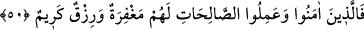
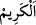
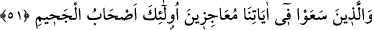

huzur ve tatmine kavuşsun. Şüphesiz ki Allah, îmân edenleri, kesinlikle dosdoğru
bir yola yöneltir.
55. İnkâr edenler, kendilerine o saat ansızın gelinceye, yahut da (kendileri için
hayır yönünden) kısır bir günün azabı gelinceye kadar onun (Kur’an) hakkında hep
şüphe içindedirler.
56. O gün, mülk Allah’ındır. İnsanlar arasında hüküm verir. (Bu hüküm gereği)
îmân edip iyi davranışlarda bulunanlar Naîm cennetlerinin içindedirler.
57. İnkâr edip âyetlerimizi yalanlayanlara gelince, işte onlar için alçaltıcı bir azap
vardır.
“De ki: “Ey insanlar! Ben ancak sizin için apaçık bir uyarıcıyım.” Helâk olan
milletlere dâir bana vahyedilen haberlerle sizi açıkça uyarıyorum. Sizin vaad
olunduğunuz azâbı getirmekte benim asla bir dahlim olmaz. Buna rağmen benden o azabı
çabuk getirmemi istiyorsunuz.
Burada uyarma, kısaca ifade edilmiş, iki fırkanın durumu sonra beyân buyrulmuştur.
Çünkü sözün başı ve siyâkı müşrikler ve cezâları içindir. Mü’minleri ve sevablarını
ancak müşriklerin öfkelerini artırmak için zikretmiştir.
et-Te’vîlâtü’n-Necmiyye’de der ki: “Burada nisyân ehline olan uyarıya işâret vardır.
Yani: ‘Ey Muhammed! Onlara de ki: Sûretçe ben size benzerim. Fakat sîretçe sizden
farklıyım. İyilik edenlerinize müjdeci, kötülük işleyenlere de uyarıcıyım. Tâat ve ihsânı
emir, fücûr ve isyânı nehiy gibi size getirdiğim türlü hususlarda deliller ikâme etmekle
te’yid olundum.”
50. Îmân edip sâlih ameller işleyen kimseler için mağfiret ve bol rızık vardır.
Îmân edip sâlih ameller işleyen kimseler için mağfiret” günahlarından geçip affetme
“ve bol rızık” cennet nimetleri, yâni zahmetsiz ve minnetsiz rızık “vardır.
“
” her türden o türün fazîletlerini kendisinde toplayan şeydir.
51. Âyetlerimiz hakkında (onları tesirsiz kılmak için) birbirlerini geri
bırakırcasına yarışanlara gelince, işte bunlar, cehennemliklerdir.
“Âyetlerimiz hakkında” âyetlerimizi karalayarak, sihre ve şiire nisbet ederek ve